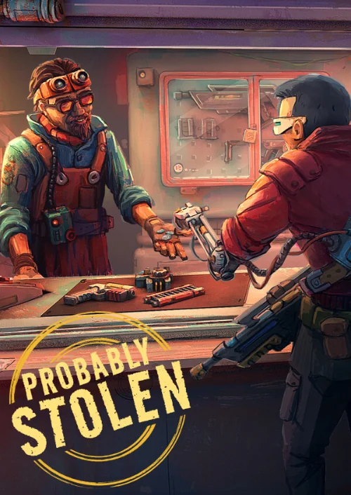
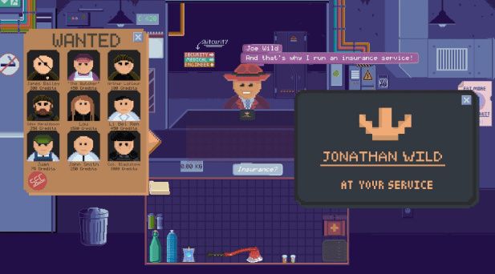
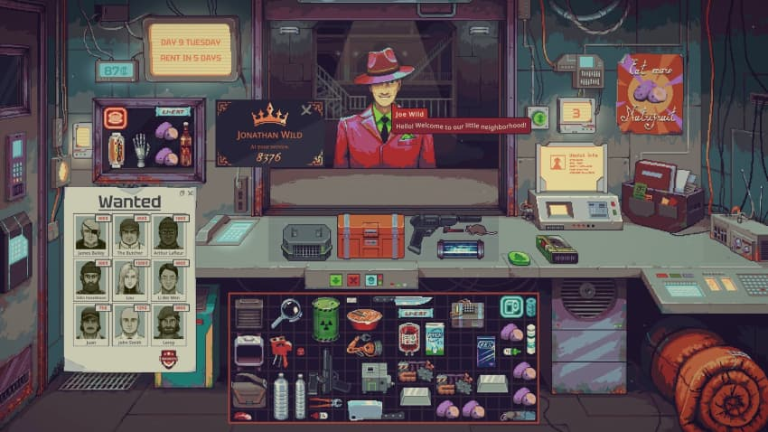
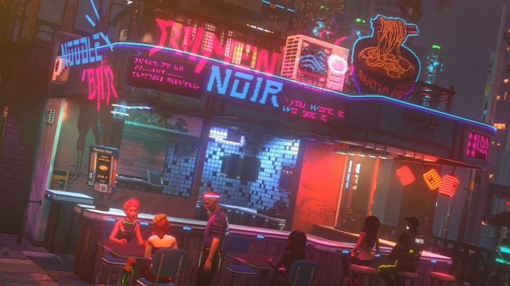
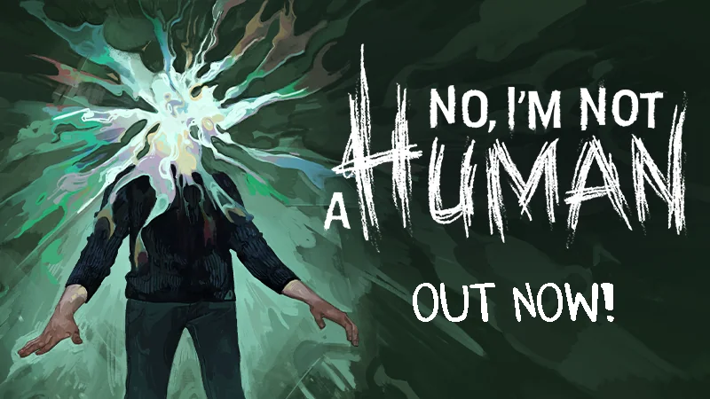
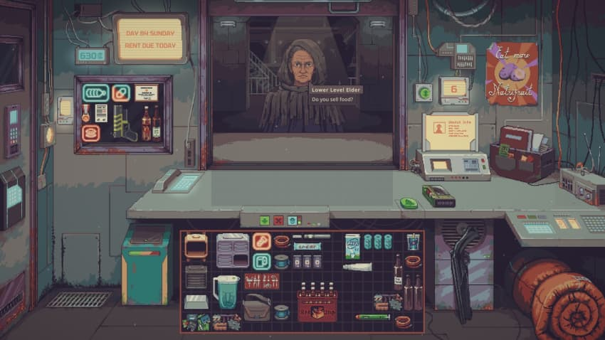
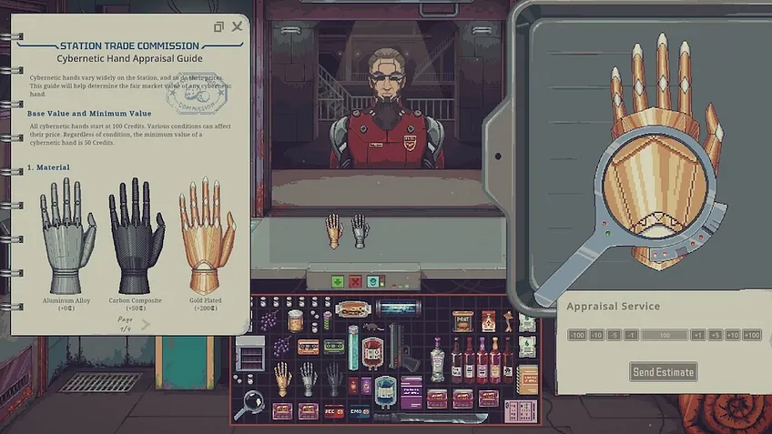
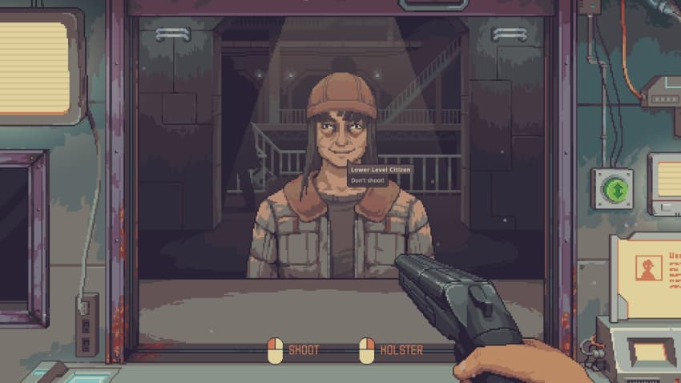
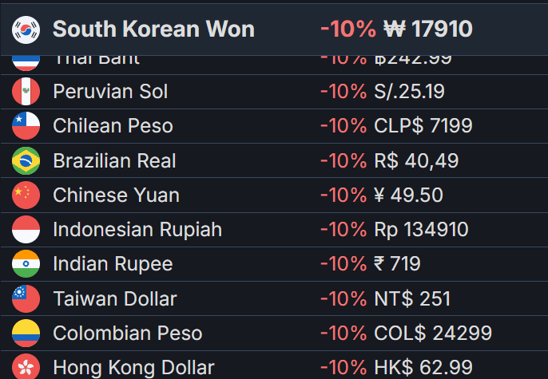
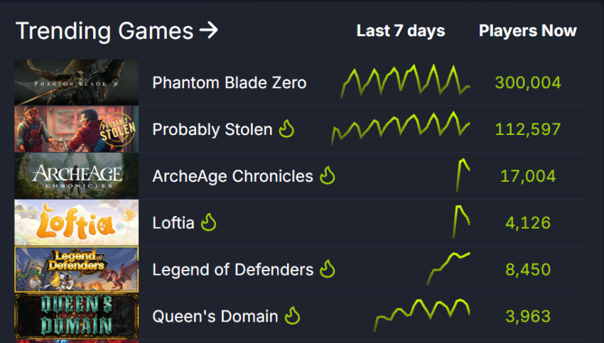

Probably Stolen이
출시 5일 만에 75만 장을 판매한 비결
by 사이먼 칼레스
정식 출시 후 곧바로 동시 접속자 수(CCU)가 8만 5천 명을 돌파했고,
오늘 아침에는 16만 5천 명까지 치솟았습니다.
싱글 플레이 전용에 메뉴가 많은 인벤토리 관리 게임인데 말이죠.
도대체 무슨 일이 벌어지고 있는 걸까요?

확실히 CCU는 플레이 시간이 길수록 더욱 재밌어지는 것 같습니다.
Tinybuild에 따르면 18만 명의 플레이 테스트 참가자 중
4만 5천 명이 20시간 이상 플레이했다고 합니다.
(GDCo는 정식 출시 후 평균 플레이 시간이 이미 10시간을 넘어설 것으로 예상하고 있습니다.)
게다가 이 게임은 어제 기준으로 75만 장이 판매되었고,
앞으로 수백만 장이 팔릴 것이 분명해 보입니다.

Probably Stolen은 초안을 대대적으로 재구축한 작품이다
원래 제목인 Deepspace Emporium은 Steam에서 여전히 확인할 수 있습니다
퍼블리셔는 데모 게임플레이에 '매료'되긴 했지만,
기존 아트(프로그래머/디자이너인 Bei Ning Pan의 작품)는 '프로그래머 수준의 아트' 에 가까웠고,
게임은 이미 Next Fest에 출품된 적이 있었습니다.

그래픽 개편과 새로운 아이디어 추가
퍼블리셔로 선정된 Tinybuild는 말합니다.
"재능 있는 픽셀 아티스트를 영입하여
캐릭터, 환경, 아이템에 완전히 새로운 시각적 스타일을 불어넣었습니다."
또한 기존의 매장 관리 및 위조품 감지 게임플레이는
초기보다 더욱 심화되었으며,
"지각 있는 악당 AI" 가 일부 고객을 조종하는 개념이 도입되었죠.

(니발리스 나이츠)
덕분에 게임은 사이버펑크 트렌드에 탑승할 수 있었다
사이버펑크 게임에 대한 사람들의 열광적인 반응은 여전하잖아요?
(니발리스 나이츠 와 사이버펑크 2077을 예로 들 수 있겠죠).
그래서 Tinybuild의 퍼블리싱 프로듀서 아르툠은
"평범한 SF 게임으로 남을 것인가, 아니면 (아마도) 더 매력적인 설정인 사이버펑크로 넘어갈 것인가?"라고
고민했습니다. 결국 후자를 선택하게 되었죠!

그러니까 이 게임은 이미 심도 있는 거래 및 재고/아이템 관리 기능을 갖춘 게임이었는데,
Papers Please처럼 위조품 감지 기능도 있었고,
이제는 No I'm Not A Human 스타일의 가짜 감지 기능까지 추가되었습니다.
게다가 인기 있는 배경 설정과 더불어
훨씬 더 깊이 있는 콘텐츠(클래스 시스템, 특이한 목표를 가진 특별 '플레이' , 다양한 고객 및 이스터 에그)까지
추가했고요.

이 모든 작업은 캐나다 출신 개발자 한 명과
"음악, 사운드, UI 담당 아티스트 및 계약직 직원"들의 도움으로 이루어졌습니다.
어떻게 계산하느냐에 따라 솔로 프로젝트일 수도 있고,
5명 미만의 팀으로 만든 게임일 수도 있겠죠.
팀원들은 북미, 유럽, 그리고 전 세계에 흩어져 원격으로 근무하고 있으며,
서로 직접 만난 적은 한 번도 없습니다.

마지막으로, 저희가 생각하는 이 게임의 특별한 점을 말씀드리자면,
복잡한 인벤토리 화면 덕분에 깊이 있는 게임처럼 느껴지고,
고전적인 '노가다와 수집' 요소가 많으면서도
항상 새로운 볼거리가 있다는 점입니다.
작은 개발팀이 얼마나 깊이 있는 스토리를 만들어낼 수 있는지
절대 과소평가하지 마세요.
정말 할 거리가 끝없이 펼쳐지거든요…
저희가 게임 출시 전 및 출시 단계에서
주목할 만하다고 생각한 점은 다음과 같아요

늦게 발표된 게임임에도 불구하고 엄청난 마케팅 공세가 쏟아졌다.
8월 말에 공개된 게임이 이렇게 성공적이라니 놀랍네요.
Tinybuild 글로벌 마케팅 책임자 아르노 리샤르는
"
출시 전날까지 위시리스트에 추가된 게임 수가 578,528개에 달했고,
중국을 비롯한 여러 지역에서 높은 성장세를 보였습니다.
"
라고 말했습니다.
(굳이 설명할 필요는 없겠지만) 중국은 이런류에 특히 강한 시장이다.
빌리빌리(bilibili)를 통한 초기 모멘텀이 핵심이었고,
24만 6천 건의 플레이 테스트 참여 중
51%가 중국에서, 17%가 미국에서, 그리고 다른 국가에서는 3% 미만이 참여했습니다.
따라서 중국 퍼블리셔인 XD와 협력하고 그곳에서 마케팅을 진행하는 것이 매우 중요했죠.

가격 책정은 수동으로 진행되었으며, 효과가 좋은 것으로 보임
게임의 가격 책정에 대해선 스팀의 자동 가격책정 방식에 의존하지 않고
중국 가격은 55위안 (8.25달러) 으로
미국 가격보다 59% 할인된 가격으로 책정되었습니다.
미국에서 더 비싸지만,
CIS, MENA, SASIA, LATAM 지역은 7~8달러 선으로 책정되었고요.
이러한 접근 방식은 어느정도 효과를 보고 있는 것으로 보이네요.

흥미로운 점은, 이 마지막 부분을 곱씹어보면,
대부분의 지역에서 5달러에서 15달러 사이의
저렴하면서도 플레이 시간이 긴 게임이 다시 한번 인기를 얻고 있다는 것입니다.
(미국에 한해선 17.99달러로 조금 더 비쌌지만요.)
'저렴하지만 깊이 있는' 게임이라는 트렌드가 새로운 표준으로 자리 잡고 있는데,
이는 3년 전에는 상상도 못 했던 일입니다.
마지막으로, 로그라이트 게임에서
30분 정도의 '플레이' 시간이 일반적이라고 생각했던 시대에,
Probably Stolen이 오랫동안 플레이되는 이유 중 하나는
스피드런 스타일의 플레이조차 2~5시간이 걸리고,
일반적인 플레이는 10~15시간까지 걸리기 때문일겁니다.
하지만 게임의 매력이
마치 칼로 무작위로 생성된 버터를 자르듯
그 긴 플레이 시간을 끌어당기고, 결국 모두가 만족하게 되죠.
원문:
https://newsletter.gamediscover.co/p/how-probably-stolen-traded-up-to

---
아무리 타이니빌드같은 인디치곤 대형 퍼블리셔 꼈다지만
게임플레이 루프가 탄탄하긴 했나보네
아트바꾸니까 훨훨날아다니는거보면